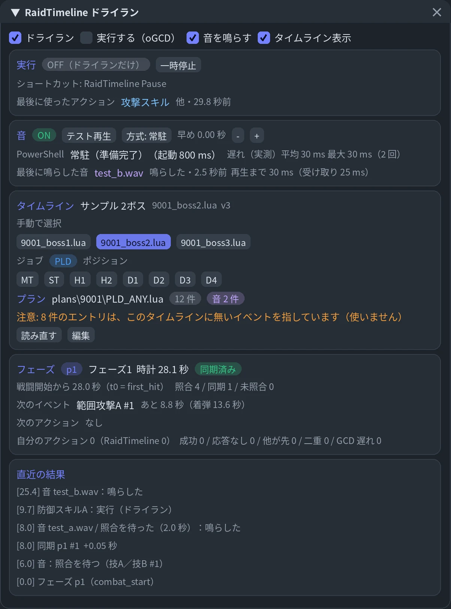
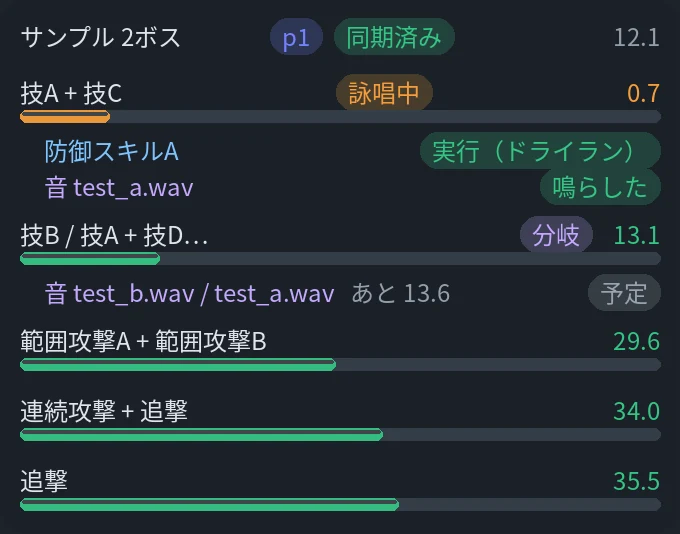

RaidTimeline は、ボスの技が「いつ・何が来るか」をタイムラインで先読みして、軽減のアクションや合図の音を、決めておいた時刻に出してくれる戦闘補助のアドオンです。タイムラインは付属の変換ツールで、リプレイや記録ログから作れます。


配るのは 2 つ。ゲームの中で動く アドオン と、PC で使う 変換ツール です。
次に来る技を、技名・着弾までの秒数・残り時間のバーで並べます。分岐する技は「A / B」、詠唱が始まれば実際の技名に変わります。
「全体攻撃の 3 秒前に防御スキル」のような約束（プラン）どおりに、アビリティを自動で使います。まずはドライラン（使ったことにするだけ）で確かめられます。
決めた時刻に wav を鳴らします。ランダムで技が変わる所は、来た技ごとに別の音を鳴らせます。
タイムラインの技ごとに、使うアクション・タイミング・対象・音を画面で決めます。戦闘中に直してもすぐ反映し、前の版に戻せます。
戦闘中の敵の詠唱・HP・ターゲット可否などを 1 プル 1 ファイルで記録します。変換ツールで、正確なタイムラインの材料になります。
リプレイと記録ログを何プル分もまとめて読み、ランダム・順番の入れ替わり・流れの分岐・火力で変わるフェーズを見分けて、タイムラインを書き出します。
タイムラインは「戦闘の台本」、プランは「自分の動きの約束」。この 2 つをそろえると、アドオンが戦闘に合わせて動きます。
GitHub の Releases に、毎回 2 つの zip を置いています。